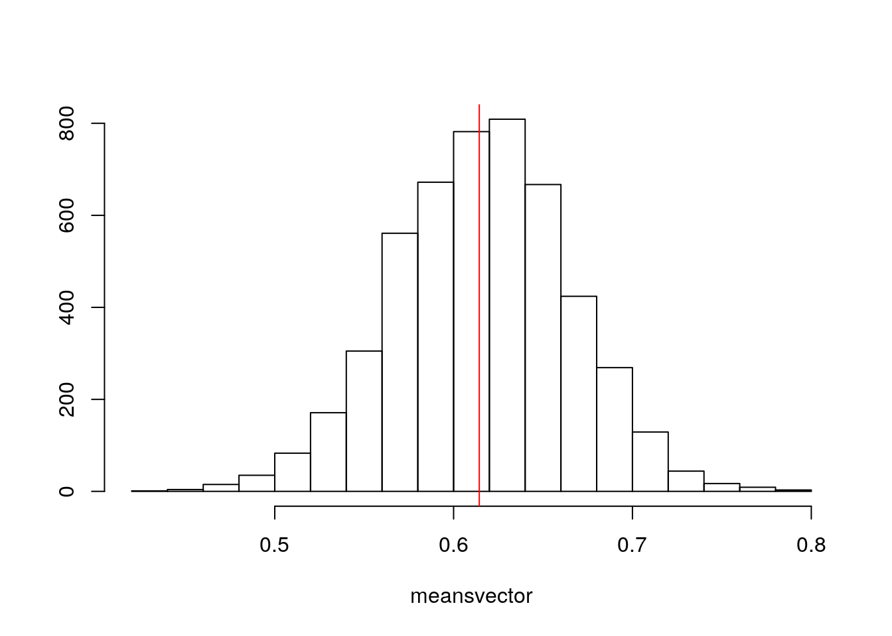
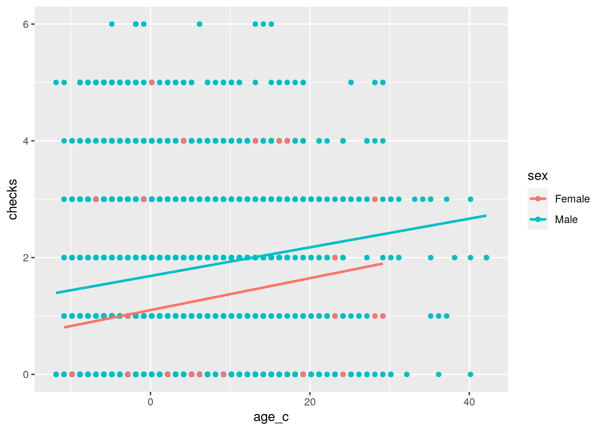
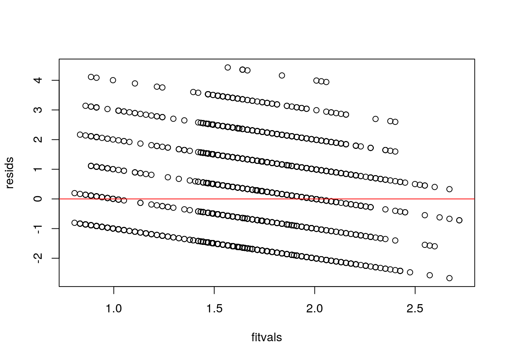
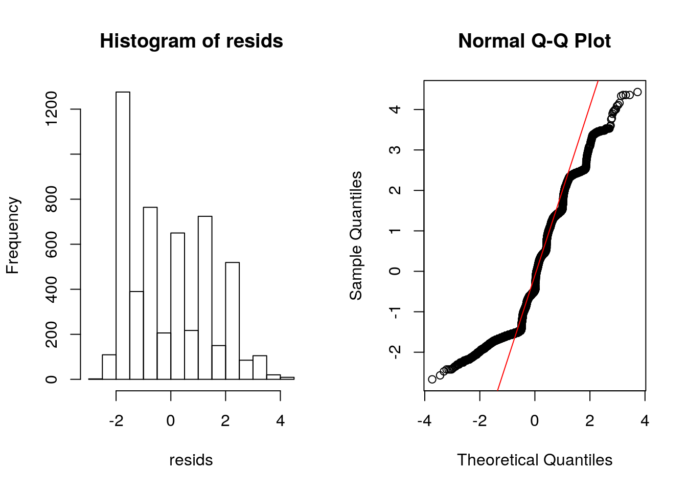
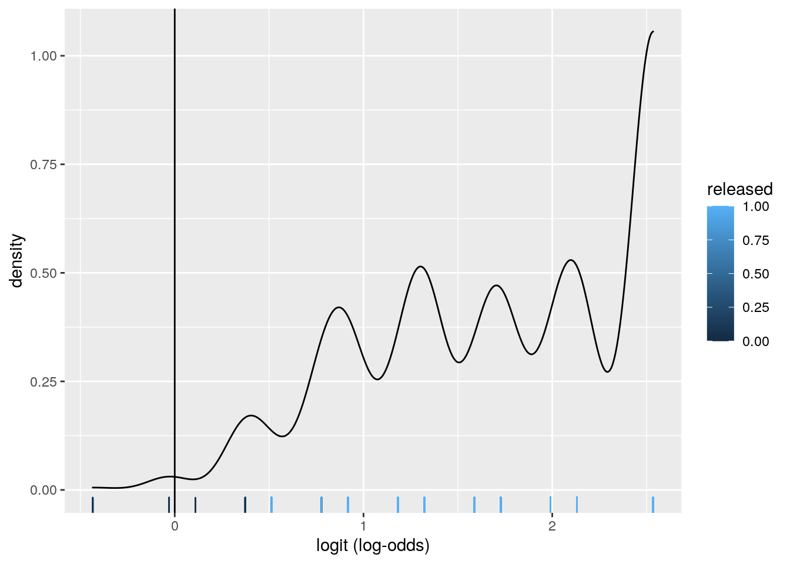
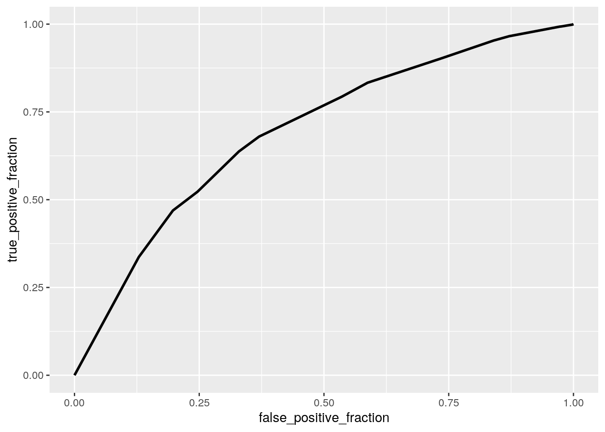
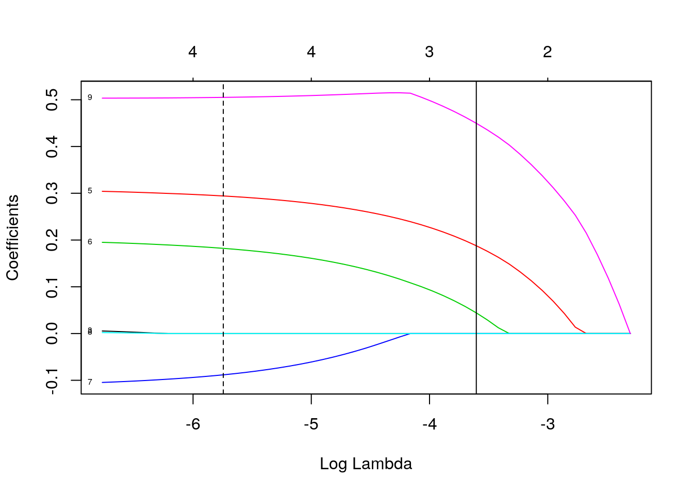

Arrests <- read_csv("Arrests.csv")
Arrests <- Arrests %>% mutate(released = ifelse(released ==
"No", 0, 1))I am using a dataset named "Arrests" which originally had 8 variables and has 5,226 observations. This dataset is measuring different statistics about arrests that were made in Toronto for marijuana possession. Some of the main variables I will focus on are "released" determining whether or not the person was released with a summons (this will be my binary variable), "colour" which categorizes the people arrested into being black or white race, and "checks" which is a numeric vector summarizing the about of times the person's name appears in a police database. Other variables used from this dataset include the year of the arrest, age and sex of the arrestee, and whether or not the arrestee was a citizen or whether they were employeed.
# MANOVA
arrests_manova <- manova(cbind(year, age, checks) ~
colour, data = Arrests)
summary(arrests_manova)## Df Pillai approx F num Df den Df Pr(>F)
## colour 1 0.031688 56.962 3 5222 < 2.2e-16 ***
## Residuals 5224
## ---
## Signif. codes: 0 '***' 0.001 '**' 0.01 '*' 0.05 '.' 0.1 ' ' 1# Univariate ANOVAs
summary.aov(arrests_manova)## Response year :
## Df Sum Sq Mean Sq F value Pr(>F)
## colour 1 0.2 0.19974 0.1034 0.7479
## Residuals 5224 10095.8 1.93259
##
## Response age :
## Df Sum Sq Mean Sq F value Pr(>F)
## colour 1 1637 1637.47 23.78 1.112e-06 ***
## Residuals 5224 359713 68.86
## ---
## Signif. codes: 0 '***' 0.001 '**' 0.01 '*' 0.05 '.' 0.1 ' ' 1
##
## Response checks :
## Df Sum Sq Mean Sq F value Pr(>F)
## colour 1 366.3 366.33 159.3 < 2.2e-16 ***
## Residuals 5224 12012.9 2.30
## ---
## Signif. codes: 0 '***' 0.001 '**' 0.01 '*' 0.05 '.' 0.1 ' ' 1Arrests %>% group_by(colour) %>% summarize(mean(year),
mean(age), mean(checks))## # A tibble: 2 x 4
## colour `mean(year)` `mean(age)` `mean(checks)`
## <chr> <dbl> <dbl> <dbl>
## 1 Black 2000. 24.8 2.10
## 2 White 2000. 23.5 1.49# Post-Hoc t-tests
pairwise.t.test(Arrests$age, Arrests$colour, p.adj = "none")##
## Pairwise comparisons using t tests with pooled SD
##
## data: Arrests$age and Arrests$colour
##
## Black
## White 1.1e-06
##
## P value adjustment method: nonepairwise.t.test(Arrests$checks, Arrests$colour, p.adj = "none")##
## Pairwise comparisons using t tests with pooled SD
##
## data: Arrests$checks and Arrests$colour
##
## Black
## White <2e-16
##
## P value adjustment method: none# MANOVA Assumptions
group_assumptions <- Arrests$colour
DVs <- Arrests %>% select(year, age, checks)
sapply(split(DVs, group_assumptions), mshapiro_test)## Black White
## statistic 0.924329 0.9185132
## p.value 6.103419e-25 7.967746e-42box_m(DVs, group_assumptions)## # A tibble: 1 x 4
## statistic p.value parameter method
## <dbl> <dbl> <dbl> <chr>
## 1 25.4 0.000285 6 Box's M-test for Homogeneity of Covariance Matri…lapply(split(DVs, group_assumptions), cov)## $Black
## year age checks
## year 2.07573827 -0.5205579 -0.02842568
## age -0.52055794 73.9111848 0.65684557
## checks -0.02842568 0.6568456 2.32733450
##
## $White
## year age checks
## year 1.88579265 0.09458791 -0.09757567
## age 0.09458791 67.20593178 1.88330154
## checks -0.09757567 1.88330154 2.29047906A one-way MANOVA was conducted to determine the effect of the skin colour of people arrested (Black or White) on three dependent variables (Year, Age, and Checks). Significant differences were found among the two skin colours for at least one of the dependent variables, Pillai trace = 0.03, pseudo F(3, 5222) = 56.96, p < 0.0001. Univariate ANOVAs for each dependent variable were conducted as follow-up tests to the MANOVA, using the Bonferroni method for controlling Type I error rates for multiple comparisons. The univariate ANOVAs for Age and Checks were also significant, pseudo F(1, 5224) = 23.78, p < 0.0001 and pseudo F(1, 5224) = 159.3, p < 0.0001. Post hoc analysis was performed conducting pairwise comparisons to confirm which coloured people differed in age and checks. Both colours were found to differ significantly from each other in terms of age and checks after adjusting for multiple comparisons (bonferroni α = .05/8 = 0.00625). Ultimately, I performed 1 MANOVA, 3 ANOVAs, and 4 pairwise t-tests. Even adjusting the significance level per the bonferroni correlation, a significant difference was found between black and white skin colour for both age and checks. Based on the assumption tests run, it is not likely that the assumptions for the MANOVA were met. The p-value was less than 0.05 and rejected the null when testing the multivariate normality, homogeneity, and many covarience matricies.
Arrests %>% summarize(mean(checks[colour == "Black"]) -
mean(checks[colour == "White"]))## # A tibble: 1 x 1
## `mean(checks[colour == "Black"]) - mean(checks[colour == "White"])`
## <dbl>
## 1 0.614Arrests %>% group_by(colour) %>% summarize(s = mean(checks)) %>%
summarize(diff(s))## # A tibble: 1 x 1
## `diff(s)`
## <dbl>
## 1 -0.614meansvector <- vector()
for (i in 1:5000) {
holdsample <- Arrests %>% sample_frac(replace = T)
meansvector[i] <- mean(holdsample[holdsample$colour ==
"Black", ]$checks) - mean(holdsample[holdsample$colour ==
"White", ]$checks)
}
mean(meansvector < -0.6143611 | meansvector > 0.6143611)## [1] 0.5214t.test(data = Arrests, checks ~ colour)##
## Welch Two Sample t-test
##
## data: checks by colour
## t = 12.571, df = 2175.2, p-value < 2.2e-16
## alternative hypothesis: true difference in means is not equal to 0
## 95 percent confidence interval:
## 0.5185184 0.7102038
## sample estimates:
## mean in group Black mean in group White
## 2.099379 1.485018{
hist(meansvector, main = "", ylab = "")
abline(v = c(0.6143611, -0.6143611), col = "red")
}
H0: Mean number of checks is the same for black vs white coloured people. HA: Mean number of checks is different for black vs white coloured people. The mean shows the p-value is > 0.05, so we fail to reject H0. However, when compared to the t-test, the p-value is < 0.05, and the result is seen as significant.
Arrests$age_c <- Arrests$age - mean(Arrests$age)
fit_project <- lm(checks ~ age_c * sex, data = Arrests)
coef(fit_project)## (Intercept) age_c sexMale age_c:sexMale
## 1.10112363 0.02731899 0.58497106 -0.00279582# Plot
Arrests %>% ggplot(aes(age_c, checks, color = sex)) +
geom_point() + geom_smooth(method = "lm", se = F)
# regression assumptions
resids <- fit_project$residuals
fitvals <- fit_project$fitted.values
plot(fitvals, resids)
abline(h = 0, col = "red")
par(mfrow = c(1, 2))
hist(resids)
qqnorm(resids)
qqline(resids, col = "red")
bptest(fit_project)##
## studentized Breusch-Pagan test
##
## data: fit_project
## BP = 17.488, df = 3, p-value = 0.0005608# Robust standard errors
coeftest(fit_project, vcov = vcovHC(fit_project))##
## t test of coefficients:
##
## Estimate Std. Error t value Pr(>|t|)
## (Intercept) 1.1011236 0.0672157 16.3819 < 2.2e-16 ***
## age_c 0.0273190 0.0078756 3.4688 0.000527 ***
## sexMale 0.5849711 0.0707504 8.2681 < 2.2e-16 ***
## age_c:sexMale -0.0027958 0.0083004 -0.3368 0.736260
## ---
## Signif. codes: 0 '***' 0.001 '**' 0.01 '*' 0.05 '.' 0.1 ' ' 1# Proportion of variation
(sum((Arrests$checks - mean(Arrests$checks))^2) - sum(fit_project$residuals^2))/sum((Arrests$checks -
mean(Arrests$checks))^2)## [1] 0.02950159For every 1 unit increase in age, there is a 0.027 unit increase in checks. For people with average age, Males have average/predicted checks that are 0.585 greater than females. 1.101 is the mean/predicted number of checks for females of average age. -0.003 represents the difference in slopes. My model explains 2.95% of vaiability in checks.
# Resampling observations
boot_dat <- sample_frac(Arrests, replace = T)
samp_distn <- replicate(5000, {
boot_dat <- sample_frac(Arrests, replace = T) #take bootstrap sample of rows
fit_project_bs <- lm(checks ~ age * sex, data = boot_dat) #fit model on bootstrap sample
coef(fit_project_bs) #save coefs
})
## Estimated/boostrap SEs
samp_distn %>% t %>% as.data.frame %>% summarize_all(sd)## (Intercept) age sexMale age:sexMale
## 1 0.1897843 0.007905871 0.2016514 0.008343874# Resampling residuals
resid_resamp <- replicate(5000, {
new_resids <- sample(resids, replace = TRUE)
Arrests$new_y <- fitvals + new_resids
fit_project_bs <- lm(new_y ~ age * sex, data = Arrests)
coef(fit_project_bs)
})
## Estimated SEs
resid_resamp %>% t %>% as.data.frame %>% summarize_all(sd)## (Intercept) age sexMale age:sexMale
## 1 0.2087553 0.008345456 0.2179039 0.008706193## Normal-theory SEs
coeftest(fit_project)##
## t test of coefficients:
##
## Estimate Std. Error t value Pr(>|t|)
## (Intercept) 1.1011236 0.0721129 15.2694 < 2.2e-16 ***
## age_c 0.0273190 0.0083840 3.2585 0.001127 **
## sexMale 0.5849711 0.0753743 7.7609 1.008e-14 ***
## age_c:sexMale -0.0027958 0.0087917 -0.3180 0.750491
## ---
## Signif. codes: 0 '***' 0.001 '**' 0.01 '*' 0.05 '.' 0.1 ' ' 1## Heteroskedasticity Robust SEs
coeftest(fit_project, vcov = vcovHC(fit_project))##
## t test of coefficients:
##
## Estimate Std. Error t value Pr(>|t|)
## (Intercept) 1.1011236 0.0672157 16.3819 < 2.2e-16 ***
## age_c 0.0273190 0.0078756 3.4688 0.000527 ***
## sexMale 0.5849711 0.0707504 8.2681 < 2.2e-16 ***
## age_c:sexMale -0.0027958 0.0083004 -0.3368 0.736260
## ---
## Signif. codes: 0 '***' 0.001 '**' 0.01 '*' 0.05 '.' 0.1 ' ' 1## Bootstrapped SEs (resampling residuals)
resid_resamp %>% t %>% as.data.frame %>% summarize_all(sd)## (Intercept) age sexMale age:sexMale
## 1 0.2087553 0.008345456 0.2179039 0.008706193The standard errors varied slightly, but the p-values that were significant before remained significance, and the p-values that were not significant still did not show significance.
fit_project2 <- glm(released ~ colour + checks, data = Arrests,
family = "binomial")
prob <- predict(fit_project2, type = "response")
coeftest(fit_project2)##
## z test of coefficients:
##
## Estimate Std. Error z value Pr(>|z|)
## (Intercept) 1.990772 0.091212 21.8257 < 2.2e-16 ***
## colourWhite 0.543995 0.081411 6.6821 2.356e-11 ***
## checks -0.404207 0.024986 -16.1775 < 2.2e-16 ***
## ---
## Signif. codes: 0 '***' 0.001 '**' 0.01 '*' 0.05 '.' 0.1 ' ' 1exp(coef(fit_project2))## (Intercept) colourWhite checks
## 7.321184 1.722877 0.667506class_diag <- function(probs, truth) {
if (is.numeric(truth) == FALSE & is.logical(truth) ==
FALSE)
truth <- as.numeric(truth) - 1
tab <- table(factor(probs > 0.5, levels = c("FALSE",
"TRUE")), truth)
prediction <- ifelse(probs > 0.5, 1, 0)
acc = mean(truth == prediction)
sens = mean(prediction[truth == 1] == 1)
spec = mean(prediction[truth == 0] == 0)
ppv = mean(truth[prediction == 1] == 1)
f1 = 2 * (sens * ppv)/(sens + ppv)
# CALCULATE EXACT AUC
ord <- order(probs, decreasing = TRUE)
probs <- probs[ord]
truth <- truth[ord]
TPR = cumsum(truth)/max(1, sum(truth))
FPR = cumsum(!truth)/max(1, sum(!truth))
dup <- c(probs[-1] >= probs[-length(probs)], FALSE)
TPR <- c(0, TPR[!dup], 1)
FPR <- c(0, FPR[!dup], 1)
n <- length(TPR)
auc <- sum(((TPR[-1] + TPR[-n])/2) * (FPR[-1] -
FPR[-n]))
data.frame(acc, sens, spec, ppv, auc)
}
class_diag(prob, Arrests$released)## acc sens spec ppv auc
## 1 0.8279755 0.993078 0.02578475 0.8320124 0.6946288auc(Arrests$released, prob)## Area under the curve: 0.6946# confusion matrix
table(predict = as.numeric(prob > 0.5), truth = Arrests$released) %>%
addmargins## truth
## predict 0 1 Sum
## 0 23 30 53
## 1 869 4304 5173
## Sum 892 4334 5226Arrests$logit <- predict(fit_project2, type = "link")
# density plot
Arrests$logit <- predict(fit_project2, type = "link")
Arrests %>% ggplot() + geom_density(aes(logit, color = released,
fill = released), alpha = 0.4) + geom_vline(xintercept = 0) +
xlab("logit (log-odds)") + geom_rug(aes(logit,
color = released))
# ROC and AUC
ROCplot <- ggplot(Arrests) + geom_roc(aes(d = released,
m = prob), n.cuts = 0)
ROCplot
calc_auc(ROCplot)## PANEL group AUC
## 1 1 -1 0.6946288Controlling for checks, white coloured people have significantly higher odds of being released as the log-odds increases by 0.544 and multiplies odds by a factor of 1.723. Controlling for colour, going up 1 check decreases log-odds by 0.404 and multiplies odds by a factor of 0.668, having a negative impact on odds of being released. The sensitivity or TPR is 4304/4334 = 0.993. The specificity or TNR is 23/892 = 0.026. The precision (PPV) is 4304/5173 = 0.832.The accuracy is 0.828 but can be easily duped so we use AUC. The ROC curve allows us to visualize the trade-off between sensitivity and specificity. Our AUC is 0.695 which is in the poor range.
fit_project_last <- glm(released ~ ., data = Arrests,
family = "binomial")
prob <- predict(fit_project_last, type = "response")
class_diag(prob, Arrests$released)## acc sens spec ppv auc
## 1 0.8279755 0.9856945 0.06165919 0.8361715 0.7248265# 10-fold CV
set.seed(1234)
k = 10
data <- Arrests %>% sample_frac #put rows of dataset in random order
folds <- ntile(1:nrow(data), n = 10) #create fold labels
diags <- NULL
for (i in 1:k) {
train <- data[folds != i, ] #create training set (all but fold i)
test <- data[folds == i, ] #create test set (just fold i)
truth <- test$released #save truth labels from fold i
fit <- glm(released ~ ., data = train, family = "binomial")
probs <- predict(fit, newdata = test, type = "response")
diags <- rbind(diags, class_diag(probs, truth))
}
summarize_all(diags, mean) #AUC about the same## acc sens spec ppv auc
## 1 0.8287455 0.9866546 0.06135921 0.836319 0.7191747# lasso
y <- as.matrix(Arrests$released)
x <- model.matrix(released ~ ., data = Arrests)[, -1]
x <- scale(x)
glm(y ~ x, family = binomial)##
## Call: glm(formula = y ~ x, family = binomial)
##
## Coefficients:
## (Intercept) xcolourWhite xyear xage xsexMale
## 1.781500 0.167702 -0.005864 0.018591 0.002038
## xemployedYes xcitizenYes xchecks xage_c xlogit
## 0.310279 0.204474 -0.560435 NA NA
##
## Degrees of Freedom: 5225 Total (i.e. Null); 5218 Residual
## Null Deviance: 4776
## Residual Deviance: 4299 AIC: 4315cv <- cv.glmnet(x, y, family = "binomial")
# make a plot of the coefficients for different
# values of lambda
{
plot(cv$glmnet.fit, "lambda", label = TRUE)
abline(v = log(cv$lambda.1se))
abline(v = log(cv$lambda.min), lty = 2)
}
cv <- cv.glmnet(x, y, family = "binomial")
lasso <- glmnet(x, y, family = "binomial", lambda = cv$lambda.1se)
coef(lasso)## 10 x 1 sparse Matrix of class "dgCMatrix"
## s0
## (Intercept) 1.67452449
## colourWhite .
## year .
## age .
## sexMale .
## employedYes 0.18776937
## citizenYes 0.04417826
## checks .
## age_c .
## logit 0.44975433# new 10 fold CV
set.seed(1234)
k = 10
data <- Arrests %>% sample_frac
folds <- ntile(1:nrow(data), n = 10)
diags <- NULL
for (i in 1:k) {
train <- data[folds != i, ]
test <- data[folds == i, ]
truth <- test$released
fit <- glm(released ~ employed + citizen + logit,
data = train, family = "binomial")
probs <- predict(fit, newdata = test, type = "response")
diags <- rbind(diags, class_diag(probs, truth))
}
diags %>% summarize_all(mean)## acc sens spec ppv auc
## 1 0.8279811 0.9871231 0.0551851 0.8354213 0.7231867Our in-sample AUC is 0.725 in the fair range. The out of sample AUC is 0.719 which is also i nthe fair range and is slightly lower than the in-sample AUC. In fact, all of the out of sample matrics, aside from accuracy and sensibility which went slightly up, are slightly lower than in the in-sample matrics. The variables that were retained from the lasso are employment, citizenshop, and the logit variable. The final AUC is 0.723 which moved slightly up again making it 0.002 lower than the in-sample AUC and 0.004 higher than the out of sample AUC.
## R version 3.6.1 (2019-07-05)
## Platform: x86_64-pc-linux-gnu (64-bit)
## Running under: Ubuntu 18.04.5 LTS
##
## Matrix products: default
## BLAS: /stor/system/opt/R/R-3.6.1/lib/R/lib/libRblas.so
## LAPACK: /stor/system/opt/R/R-3.6.1/lib/R/lib/libRlapack.so
##
## locale:
## [1] LC_CTYPE=en_US.UTF-8 LC_NUMERIC=C
## [3] LC_TIME=en_US.UTF-8 LC_COLLATE=en_US.UTF-8
## [5] LC_MONETARY=en_US.UTF-8 LC_MESSAGES=en_US.UTF-8
## [7] LC_PAPER=en_US.UTF-8 LC_NAME=C
## [9] LC_ADDRESS=C LC_TELEPHONE=C
## [11] LC_MEASUREMENT=en_US.UTF-8 LC_IDENTIFICATION=C
##
## attached base packages:
## [1] stats graphics grDevices utils datasets methods base
##
## other attached packages:
## [1] rstatix_0.6.0 glmnet_4.0-2 Matrix_1.2-17 plotROC_2.2.1
## [5] pROC_1.16.2 sandwich_2.5-1 lmtest_0.9-37 zoo_1.8-8
## [9] forcats_0.5.0 stringr_1.4.0 dplyr_1.0.1 purrr_0.3.4
## [13] readr_1.3.1 tidyr_1.1.1 tibble_3.0.3 ggplot2_3.3.2
## [17] tidyverse_1.3.0 knitr_1.29
##
## loaded via a namespace (and not attached):
## [1] httr_1.4.2 jsonlite_1.7.0 splines_3.6.1 foreach_1.5.0
## [5] carData_3.0-4 modelr_0.1.8 assertthat_0.2.1 blob_1.2.1
## [9] cellranger_1.1.0 yaml_2.2.1 pillar_1.4.6 backports_1.1.8
## [13] lattice_0.20-41 glue_1.4.2 digest_0.6.25 rvest_0.3.6
## [17] colorspace_1.4-1 htmltools_0.5.0 plyr_1.8.6 pkgconfig_2.0.3
## [21] broom_0.7.0 haven_2.3.1 bookdown_0.20 scales_1.1.1
## [25] openxlsx_4.1.5 rio_0.5.16 mgcv_1.8-31 farver_2.0.3
## [29] generics_0.0.2 car_3.0-8 ellipsis_0.3.1 withr_2.2.0
## [33] cli_2.0.2 survival_3.2-3 magrittr_1.5 crayon_1.3.4
## [37] readxl_1.3.1 evaluate_0.14 fs_1.5.0 fansi_0.4.1
## [41] nlme_3.1-148 xml2_1.3.2 foreign_0.8-71 blogdown_0.20
## [45] tools_3.6.1 data.table_1.13.0 hms_0.5.3 formatR_1.7
## [49] lifecycle_0.2.0 munsell_0.5.0 reprex_0.3.0 zip_2.1.0
## [53] compiler_3.6.1 rlang_0.4.7 grid_3.6.1 iterators_1.0.12
## [57] rstudioapi_0.11 labeling_0.3 rmarkdown_2.3 gtable_0.3.0
## [61] codetools_0.2-16 abind_1.4-5 DBI_1.1.0 curl_4.3
## [65] R6_2.4.1 lubridate_1.7.9 utf8_1.1.4 shape_1.4.5
## [69] stringi_1.5.3 Rcpp_1.0.5 vctrs_0.3.2 dbplyr_1.4.4
## [73] tidyselect_1.1.0 xfun_0.16## [1] "2020-12-11 00:19:56 CST"## sysname
## "Linux"
## release
## "4.15.0-117-generic"
## version
## "#118-Ubuntu SMP Fri Sep 4 20:02:41 UTC 2020"
## nodename
## "educcomp02.ccbb.utexas.edu"
## machine
## "x86_64"
## login
## "unknown"
## user
## "ofh78"
## effective_user
## "ofh78"